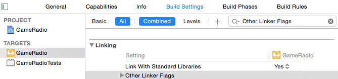
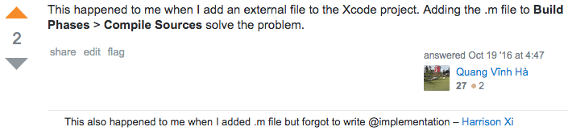

| 更新时间 | 更新内容 |
|---|---|
| 2015-03-09 | 发布 |
| 2017-04-06 | 修订 |
NSClassFromString算是ObjC动态化的精华之一，在运行时可以从一个NSString动态获得对应的Class，再创建其对应实例，调用实例内部方法。
可最近有一次写代码碰到了NSClassFromString结果总是为nil的问题，debug了半天才找到原因。
先看看StackOverflow传送门和苹果的NSClassFromString函数官方文档。
Return Value: The class object named by aClassName, or nil if no class by that name is currently loaded. If aClassName is nil, returns nil.
关键点就是标记的这里，NSClassFromString只能返回当前已经加载过的Class。所以在某些类并没有被使用过或加载过时，就会得到nil的结果。比如想要用NSClassFromString获得一个静态库里的类，通常就会遇到这种情况。这种时候我们要做的就是在主工程的编译选项里加一个参数：

如图，先选中工程的target，然后在Build Settings里搜一下Other Linker Flags，双击添加一个『-ObjC』，就OK了。如果你想要了解『-ObjC』这个flag具体是做什么的，可以参考这个链接。
当然我碰到的问题不是这个……我的问题在于光写了@interface，忘记写@implementation了……也是醉了……
下图里面这个comment的人就是我，当然这位大哥说的.m文件忘记加到工程里也会导致同样的问题。

所以各位一定也要记得检查下，自己是不是也犯二了233。